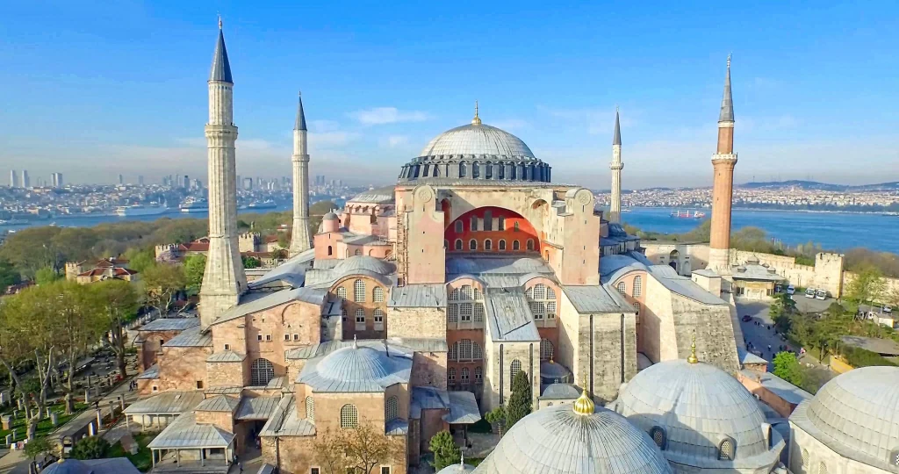
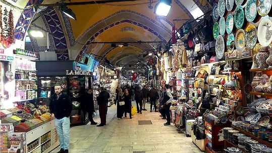
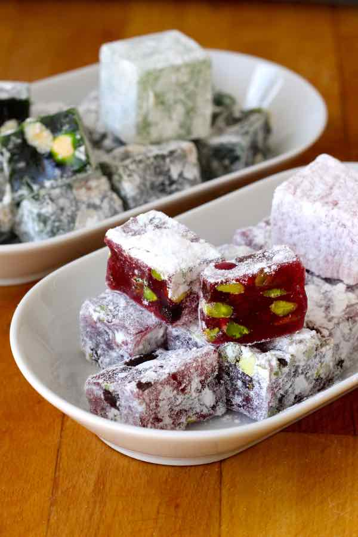
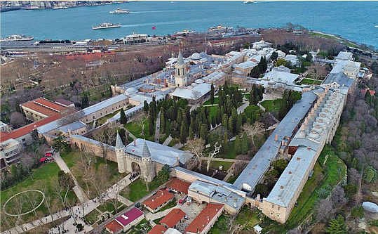

Istanbul: une beauté transcontinentale
Hagia Sophia
La basilique Sainte-Sophie représente parfaitement Istanbul du fait qu'elle incarne son passé riche en histoires. Conçue comme église au VIe siècle, elle a été transformée en mosquée en 1453 à la conquête Ottomane, puis en musée au cours du XXe siècle avant d'être reconvertie en mosquée en 2020.
Son architecture unique au moment de sa construction, ses magnifiques matériaux et sa taille font en sorte que son extérieur coupe le souffle.

Bien entendu, son intérieur est tout aussi splendide !

Bref, Hagia Sophia est à voir pour ces raisons multiples !
Le Grand Bazaar
Istanbul se trouvait autrefois sur le chemin de la fameuse route de la soie. La ville honore encore aujourd'hui cet héritage, par le biais du marché « Le Grand Bazaar ».
Dans ce marché, très occupé et dynamique, vous pouvez vraiment trouver de tout. Parmi ces multiples produits offerts, il y a notamment de superbes couverts en céramique et des souvenirs qui feront d'excellents cadeaux pour votre entourage de retour chez vous.

À goûter : les loukoums, bonbons Turque. Leur texture est moelleuse et ils sont sucrés. Ils sont délicieux, je ne peux que vous les recommander.

Le Palais Topkapi
Pendant environ 500 ans, le Palais Topkapi a été la demeure des Sultans de l'empire Ottoman et de leurs familles.
Laissons de côté pour l'instant l'architecture et l'histoire de cet immense bâtiment! Discutons des choses utiles à savoir pour ceux qui aimeraient s'y rendre.

Pour la raisonnable somme de 750 lira turque par personne, soit environ 35 dollars canadien, vous pouvez faire un tour du Palais devenu musée.
Il y a plusieurs visites guidées d'environ deux heures chaque jour. Vous avez aussi la possibilité d'utiliser des guides audio. Dans les deux cas, vous allez sortir bien informés sur l'histoire du palais.
Il est aussi permis de visiter les lieux librement.
Conclusion
Bref, Istanbul vous attend ! Ce que j'ai mentionné ne constitue qu'un petit aperçu de cette ville. N'hésitez pas aussi à aller voir le détroit de Bosphore, la forteresse Rumeli ou encore la vieille ville.
La ville est très sécuritaire, vous n'avez pas à craindre là-bas !
Même les chiens et les chats, très amicaux et nombreux dans les rues, déambulent en toute liberté.
Passez un bon séjour !
Références
- Tripadvisor - Sites historiques à Istanbul
- Britannica - Hagia Sophia
- Britannica - Empire Ottoman résumé
- Britannica - Empire Ottoman
- Istanbulpass - Palais Topkapi
- istanbultravelblog - Palais Topkapi : prix et heures
- Barcelo - Le Grand Bazaar
- Througheternity.com - L'histoire et l'architecture de Hagia Sophia
- Througheternity.com - Photo de l'intérieur de Hagia Sophia
- CelebrityCruises - Photo de Hagia Sophia de l'extérieur
- 196flavors - Photo des loukoums
- Islamiclandmarks - Photo du Palais Topkapi
Écrit par

Ali Abdeddaïm
Salut, c'est Ali ! Je suis actuellement en 4e année dans le programme d'informa...
En savoir plus